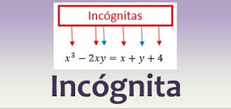

En matemáticas, una incógnita (también conocida como variable) es un valor desconocido que se busca determinar, generalmente representado por una letra (como "x" o "y").
Las incógnitas son fundamentales en la resolución de ecuaciones, donde el objetivo es encontrar el valor que, al sustituirlo en la ecuación, la satisface.
El concepto de incógnita en matemáticas:
Valor desconocido:
pLa incógnita representa una cantidad o valor que no se conoce inicialmente. Representación:
Por lo general, se representa con letras, como "x", "y", "z", o letras griegas como α, β.
Objetivo: El objetivo de resolver una ecuación es encontrar el valor de la incógnita que la hace verdadera, es decir, que satisface la igualdad.
